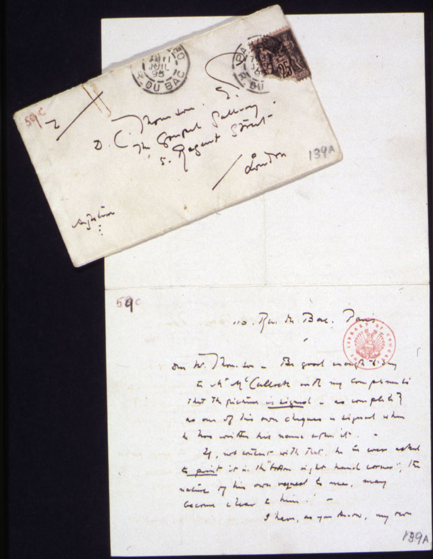
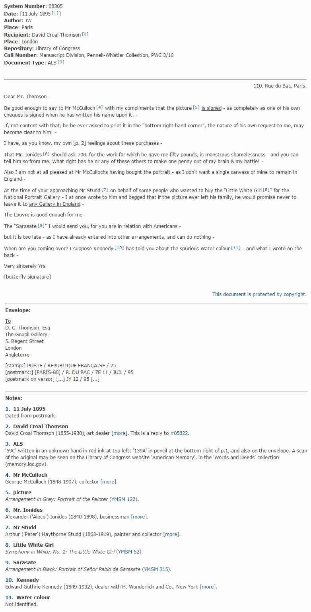
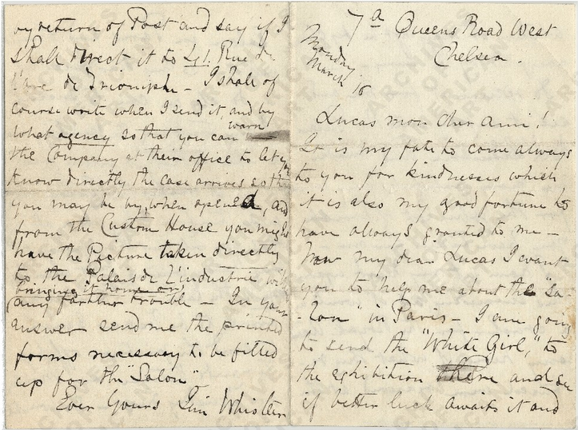
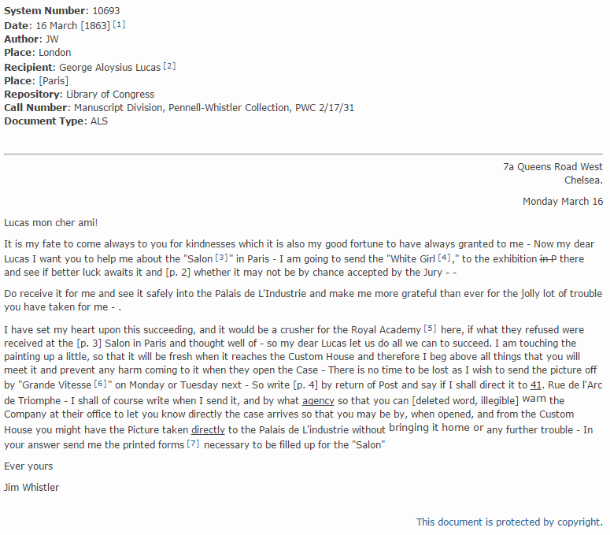
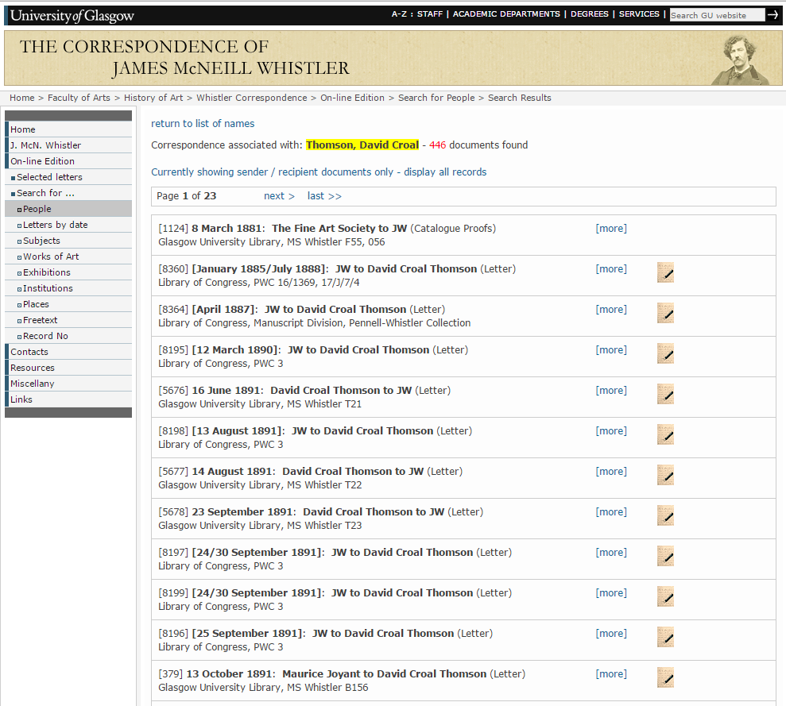

The Correspondence of James McNeill Whistler
Table of Contents
Abstract
This article reviews the online-edition of the correspondence of James McNeill Whistler, popular etcher, painter and pivotal figure in English and French artistic circles of the second half of the 19th century. The project presents a huge step forward in the history of editions of his enormous correspondence and offers transcriptions and rich commentary of over 10,000 letters. As a digital edition, however, it does not employ the great possibilities modern editorial techniques offer, especially a robust search facility and visualisation techniques that make use of the flexibility and interactive potential of the web.
Introduction
When attempting to judge a digital edition several questions arise immediately: Is this the optimal method to deal with the source material? Is there scholarly value and where does it lie? Does it achieve what it claims to do? Finally, does it belong to the digital world only by the broadest definition of being housed by computers or does it offer some truly digital enhancements? In case of The Correspondence of James McNeill Whistler (Whistler’s Correspondence) at the University of Glasgow it is quickly visible that while the appeal to the general public and scholarly value of such a resource cannot be disputed, the digital aspect of the edition is seriously lacking and will become even more obsolete as the users’ expectations rise with new technical developments. Nevertheless, the solid foundations of the project ensure that Whistler’s Correspondence still has the potential to overcome its current presentational deficiencies. In the subsequent paragraphs I will attempt to present the current state of the online edition of Whistler engaging with the questions mentioned above.
Whistler

The centenary edition
The Correspondence of James McNeill Whistler at the University of Glasgow is an online centenary (first published in 2003) edition of his correspondence that covers the period from 1855 when Whistler, aged 21, left America to study art in Paris until his death in 1903.
The University of Glasgow owns the most comprehensive resources available for research on Whistler. The Hunterian Art Gallery belonging to the University of Glasgow, second of the two major public collections of his work — the Freer Gallery of Art in Washington being the foremost — includes 80 oil paintings, several hundred drawings, watercolours and pastels and numerous personal items. The largest single collection of the artist’s correspondence and papers, comprising some 7,500 documents, together with his own publications and a specialised reference collection of over 1,800 volumes is preserved in the Department of Special Collections of the Glasgow University Library.1 The University holds Whistler's copyright and has supported the publication of the correspondence as part of its commitment to make its collections available to researchers and the general public. These assets make the University of Glasgow, which in 1992 opened a dedicated Centre for Whistler Studies, in all likelihood the best-equipped place in the world to attempt a project such as an edition of Whistler’s vast correspondence.
Scope of the edition
Though some small subsets of Whistler’s letters have been published earlier in print by Mahey (26 letters), Thorp (75 letters) and Merrill (89 letters), even combined they cover barely a fraction of the artist’s extant correspondence. Whistler’s correspondence with a scope of 10,000 letters vastly surpasses the scale of the earlier, printed editions and is the first project that undertakes a transcription of the complete body of these texts and their publication in electronic form. Extensive use was made not only of the Glasgow University Library material but also of the Pennell-Whistler Collection in the Manuscript Division of the Library of Congress, Washington, D.C., as well as other collections worldwide.2
The online edition of Whistler’s correspondence consists of over 13,000 records of letters, accounts, legal documents and miscellanea such as drawings or even menus. Letters included in the edition date from 1855 until his death in 1903. It was in Paris in 1855 that Whistler first began his serious study of art, which explains why the editors from the Faculty of Arts in Glasgow chose this threshold. The edition includes all the letters written by Whistler and all the letters written to him; letters mentioning Whistler were included on a selective basis, though the editors do not explain the inclusion criteria. The collection contains also letters of Whistler’s mother, Anna Matilda Whistler.
The general spirit of the edition was to provide mass-accessibility and accurate annotation of the contents of the correspondence, fit for the broad and not necessarily scholarly audience: students, historians (art and otherwise), collectors and curators.3 Thus, the edition is heavily annotated when it comes to persons, places, events and works of art mentioned in the texts — all of high interest to a historian and especially a historian of arts and very helpful to those with less experience in this area: students, collectors and family researchers. Auxiliary records with biographic notes for persons mentioned in the letters and English translations of letters written in French further facilitate the use of this resource.
Digital Trancripts

This simplicity reflects the customary form of printed editions and indeed makes the edition very straightforward to use; but the single viewing mode does not facilitate reading nor does it fully exploit the range of possibilities available to a web based edition. Probably the greatest disappointment arises from the absence of facsimile images. (This lack is certainly a result of the temporal and organisational limitations of the project; 4 nevertheless, the very simple addition of a link to external resources would still have been possible in those cases in which the editors already mention in a note that a digital facsimile is available from another institution.) This drawback has serious negative consequences: it is impossible to compare the transcription with an image of the original in cases where it is not available anywhere on the web, and even if it can be found online the reader is not provided with a hyperlink, but only with a note that it might be found elsewhere (see fig. 3 and 4).5 Thus, on the basis of the online edition alone it is neither possible to judge the faithfulness of the transcriptions, nor to pursue research questions that depend on the original layout or authoring process.
Editorial practice
The editors followed a common practice in traditional, print editions of modern letters. As is symptomatic from the brief amount of space reserved for the explanation of the actual editorial policy they were more concerned with presenting a reading-text of the correspondence than with diplomatic representation of the documents. The edition refrains from in-depth representation of the layout or transcriptional features.

Website organization
The website hosting the digital edition of Whistler’s correspondence follows a similar layout as other Whistler-related pages6 hosted by the University of Glasgow. Everything that is needed to know about the project’s participants and funding is clearly presented on the project’s website along with other vital information like copyright notices, citing guidelines and lists of abbreviations used throughout the edition. Finding contact information is similarly easy through the website’s dedicated subpage, providing e-mail addresses and a special enquiries form.

Results of the search (see fig. 5) are presented as a list of letters ordered chronologically. Each letter entry in the list shows the basic metadata summary. Letters published elsewhere are further marked as published. Other documents (e.g. accounts or drawings) are also clearly indicated.
The navigation structure and simple searches are very straightforward even for readers unfamiliar with digital editions. Yet this simplicity also has a negative side: it is impossible to carry out more advanced queries that combine basic search criteria or that use the full metadata that is evidently stored in the system (like a search for the particular type of document or for the published letters only). Even simple browsing of letters can be cumbersome as there is no ‘next item’ button or a similar solution. The closest one can get to viewing the entirety of the edition is browsing through the letters year by year.

Whistler’s correspondence is easily accessible without paying and requires no registration. Yet it is copyrighted in its entirety and thus does not allow for the easy reuse of data and does not supply any kind of technical interface for viewing or harvesting the source data. Nor does it integrate with social media or allow for discussions linked with particular parts of the source. However, each document has a unique reference number and can be easily cited separately. The construction of website URLs similarly allows linking to a single document, though it needs to be manually copied from the browser’s address bar as there is no feature to assist in extracting a link or generating the citation.
Technical Background
Whistler’s Correspondence, very much like other enterprises of a similar scale, spans many years, outliving the tools and workflows it started with. Decisions that were perfectly reasonable in 1997 when the editors employed an SGML mark-up based on a custom DTD with only some elements in common with the TEI Guidelines are no longer considered good practice nowadays. The files were edited and viewed with the SoftQuad Author-Editor and the Panorama SGML browser and later adjusted to make them compatible with XML processing tools for XSLT transformation into HTML. The project also made use of relational databases that changed along the way: from Paradox/FoxPro through MS Access and finally to MySQL for use on the website.7 This technical legacy affects not only the data structures or potential for future publication interface enhancements but also the possibility of continuing the present editorial work (as it is increasingly difficult to run old SGML-based software on modern systems). This aspect of the technical history of the Whistler’s Correspondence clearly illustrates an inherent problem with digital projects: during their lifetime they face the need to cyclically switch to new, better methods, software and hardware environments while always preserving and migrating the digital knowledge-base, which requires continuous funding, maintenance and re-creation of the web-based publication in line with current technology. Presently, the intention for Whistler (funds permitting) is to convert SGML fragments to TEI P5 files that could be edited with modern XML-based software and integrated into the eXist-based publishing environment currently used in Glasgow.8
Conclusion
Editorial projects should be judged considering their individual circumstances: financial and human resources, the length of the project and pre-existing material (e.g. printed editions) to build upon. In some aspects the online edition of Whistler’s letters seems not to fulfil the expectations set up by more recent similar projects like The Letters of Vincent Van Gogh.9 The slightly dated layout and simplistic interface, the single fixed visualisation, and the unavailability of facsimiles may be hard to accept for the contemporary reader. Yet we need to take the context into account: Whistler’s edition went online in 2003 and what nominally is only a decade, in this case is an era apart when it comes to the web design, the availability and quality of tools and the permeability of standards such as TEI into the wider community of editors. Whistler’s Correspondence is a no-nonsense, extremely well-commented, freely accessible collection of an enormous number of letters that can be used equally easily by the general public interested in Whistler as by professional historians. This is the result of more than a decade of scholarly work that is actually of interest not only to academic researchers but also attracts a significant non-scholarly audience as well.
Obviously there is room for improvement. In my opinion the scholarly aspect of the edition would benefit in particular from two things: the addition of digital facsimiles and improvements to the search engine. The former, however, requires substantial additional effort to create and publish images of appropriate quality and perhaps poses even greater challenges in acquiring the necessary copyright licenses. Enhancements to the interface, though not necessarily of tremendous scholarly value, might, on the other hand, increase the appeal to the general public and improve the using experience for all readers.
To conclude: Whistler’s correspondence is definitely a valuable scholarly source of historic material. The edition is a freely accessible resource of impressive size with mostly otherwise unpublished material. It can be used to answer multiple research questions for a broad range of disciplines. Patrick Sahle very pragmatically defined the digital edition as ‘a concept that is not restricted to the technological limitations of print technology but that realizes a digital paradigm’ (Sahle 2014). This sense of ‘digital’ does not seem fitting for Whistler’s correspondence, since, save for its size, the edition could very comfortably be presented on printed pages. For now, then, let us just stick with the editor’s choice and call it an ‘on-line’ edition. Nevertheless, as I argued elsewhere (Turska) the long-lasting value and the prospects for scholarly use and re-use lies in the quality, consistency and adequate depth of the underlying digital modelling of the information, not in its presentation that has to be considered ephemeral by its very nature. For Whistler’s correspondence the potential to become truly digital, in the sense of achieving far more than print could ever hope for, is there, waiting to be unleashed. The intimate knowledge and laborious research of the editors are preserved in the mark-up, never to be lost as long as there is the will and the resources to maintain, re-pack and re-paint it with latest web technologies to enhance the raw data with a set of digital tools to explore it.
Bibliography
- Anderson, Ronald, Koval, Anne. James McNeill Whistler. Beyond the Myth. London: John Murray, 1994.
- Electronic Textual Editing: Guidelines for Editors of Scholarly Editions. TEI Consortium (after the Modern Language Association's Committee on Scholarly Editions), 1977-2011. http://web.archive.org/web/20130403082916/http://www.tei-c.org/About/Archive_new/ETE/Preview/guidelines.xml.
- Mahey, John. ‘The Letters of James McNeill Whistler to George A. Lucas.’ The Art Bulletin 49.3 (1967): 247-57.
- Merrill, Linda, ed. With Kindest Regards: The Correspondence of Charles Lang Freer and James McNeill Whistler. Washington D.C. & London: Smithsonian Books, 1995.
- Sahle, Patrick. About a catalog of: Digital Scholarly Editions, v 3.0, snapshot 2008ff. 2011. http://web.archive.org/web/20141118091220/http://digitale-edition.de/vlet-about.html.
- Sahle, Patrick et al. Criteria for Reviewing Scholarly Digital Editions, version 1.1. 2014. http://web.archive.org/web/20150305125906/http://www.i-d-e.de/publikationen/weitereschriften/kriterien-version-1-1.
- Sutherland, Daniel. Whistler: A Life for Art's Sake. Yale University Press, 2014.
- Thorp, Nigel, ed. Whistler on Art: Selected Letters and Writings 1849-1903. Manchester: Fyfield Books, 1994.
- Tonra, Justin. ‘[Review on] Vincent Van Gogh – The Letters,’, ed. by Leo Jansen, Hans Luijten and Nienke Bakker. Jahrbuch für Computerphilologie 11 (2011). http://computerphilologie.digital-humanities.de/jg09/tonra.html.
- Turska, Magdalena, Rahtz, Sebastian, Cummings, James. Ending the myth of presentation in digital editions. TEI Conference. Chicago, 2014. http://web.archive.org/web/20150305130201/http://tei.northwestern.edu/files/2014/10/TurskaRahtzCummings-qorc3d.pdf.
- Williamson, George Charles. Murray Marks and His Friends. London: John Lane, 1919.
Notes
- University of Glasgow Special Collections. ↑
- The main collections of Whistler's Correspondence outside Glasgow are held in Library of Congress, New York Public Library and Freer Gallery of Art. ↑
- Personal correspondence with Professor Margaret MacDonald, the editor, September 2014. ↑
- Ibid. ↑
- Cf. e.g. note #3 in James Whistler to David Croal Thomson, 11 July 1895 http://web.archive.org/web/20150128101813/http://www.whistler.arts.gla.ac.uk/correspondence/date/display/?cid=8305&year=1895&month=07&rs=13. ↑
- Catalogue of Whistler’s etchings and on-line exhibition are presented at http://etchings.arts.gla.ac.uk/. ↑
- Information on evolution of underlying technologies based on personal correspondence with Graeme Cannon, responsible for systems development, September 2014. ↑
- Ibid. ↑
- Jansen, Leo, Hans Luijten, and Nienke Bakker, ed. Vincent van Gogh: The Letters. http://vangoghletters.org. ↑
@article{whistler,
author = {Turska, Magdalena},
title = {The Correspondence of James McNeill Whistler},
journal = {RIDE – A review journal for digital editions and resources},
number = {3},
year = {2015},
doi = {10.18716/ride.a.3.4},
url = {https://doi.org/10.18716/ride.a.3.4},
}TY - JOUR
AU - Turska, Magdalena
TI - The Correspondence of James McNeill Whistler
T2 - RIDE – A review journal for digital editions and resources
IS - 3
PY - 2015
DA - 2015/11
DO - 10.18716/ride.a.3.4
UR - https://doi.org/10.18716/ride.a.3.4
PB - Institut für Dokumentologie und Editorik e.V.
LA - en
ER - Turska, M. (2015). The Correspondence of James McNeill Whistler. RIDE – A review journal for digital editions and resources, (3). https://doi.org/10.18716/ride.a.3.4Turska, Magdalena. "The Correspondence of James McNeill Whistler." RIDE – A review journal for digital editions and resources, no. 3, 2015. https://doi.org/10.18716/ride.a.3.4.Turska, Magdalena. "The Correspondence of James McNeill Whistler." RIDE – A review journal for digital editions and resources, no. 3 (2015). https://doi.org/10.18716/ride.a.3.4.